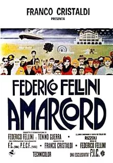
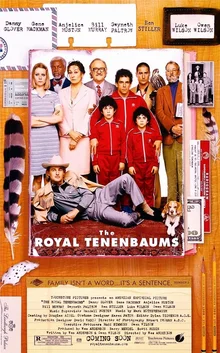

Explore film ↗Amarcord
Federico Fellini

Image: Redwave Films/ Channel Four Films/ 20th Century Fox. Source & rights: Fair use ↗.
THE ARCHIVE / 083
1997 · United Kingdom · Comedy
A film by Peter Cattaneo
Unemployed men in Sheffield organise a strip show in an attempt to regain money and confidence.
Saved automatically in this browser. Ratings are your own, not critic scores.
Film reference: Source information ↗
Synopsis: original FRAME summary. Genre and displayed production country: concise editorial classifications; international co-productions may include additional countries.

Explore film ↗Federico Fellini
 Explore film ↗
Explore film ↗Wes Anderson

Explore film ↗Wes Anderson
 Explore film ↗
Explore film ↗Jacques Tati